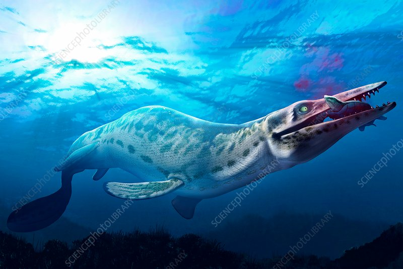
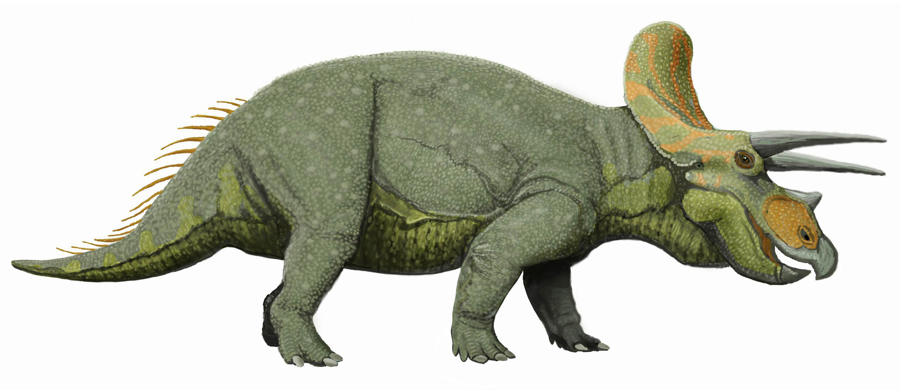
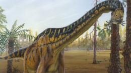

The Jurassic Period hosted some of the most iconic and marvelous dinosours known to this day. From the tanky Triceratops to the giant Mosasaurus, this period was the "golden age" of dinosours
The Mosasaurus ruled the oceans during the Jurassic period. It was the biggest, fastest, and strongest creature in the water, and it was an apex predator. Growing up to 60 feet long, these predatory beasts carved their way through any obstacle they would face in the water. Aditioanlly, there is one featured in the movive "Jurassic World".
The iconic Triceratops. One of the most well known Dinosaurs, the Triceratops was renown for its immaculate defenseive power, and the three horns it sports on its head. People compare this ancient beast to a Rhinocerous, but they are not like at all. One is a reptile, while the other is a mammal, their only similarity being they both have horns.
The Brachiosaurus is in the class of dinosaurs known as the sauropods. These were the biggest dinosaurs to ever exist, yet they were herbovors. They are characterized by their extremely long necks and human-like teeth, and are beautiful. The Brachiosaurus was the largest on of the Jurassic era, but we will see when it comes to the next era...
